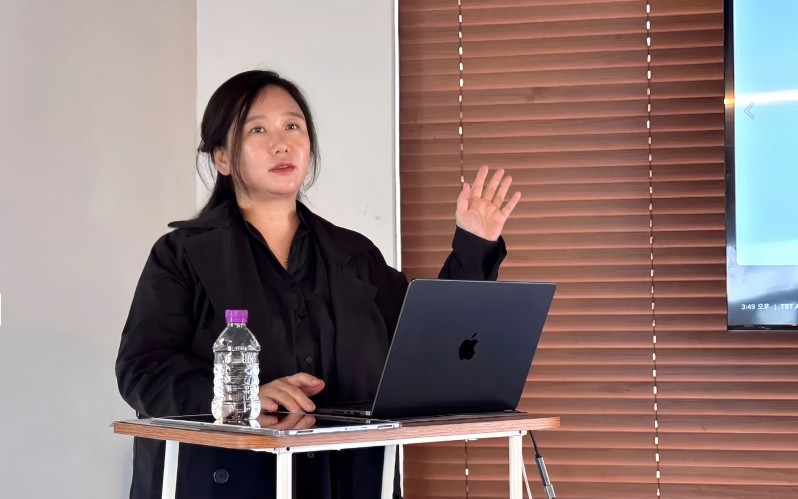

AI와 사이버보안 규제가 이제 법무 부서의 사후 검토가 아니라 제품 기획과 수출 준비 단계의 필수 절차가 됐습니다. IT 전문 매체 바이라인네트워크가 국가기술표준원 규제 대응 세미나를 통해 이 변화를 짚었고, 그 자리에 커넥트AI 양송이 대표가 위원장으로 참석했습니다.
어디에 실렸나. 이 소식을 보도한 곳은 국내 IT·테크 산업을 전문으로 다루는 매체 바이라인네트워크(byline.network)입니다. 2026년 5월 21일 곽중희 기자가 작성했으며, 기사는 산업통상부 국가기술표준원이 개최한 ‘2026 AI·사이버보안 규제 대응 세미나’를 조명했습니다.
AI·사이버보안 규제, 왜 수출의 관문인가
세미나에서는 EU AI Act, EU 사이버복원력법(CRA), 중국 TC260, 국내 AI 기본법 등 주요 규제 대응 전략이 논의됐습니다. 기사가 전한 핵심은 분명합니다. AI·사이버보안 규제가 더 이상 사후에 검토하는 법무 이슈가 아니라, 제품을 기획하고 수출을 준비하는 단계에서부터 반영해야 하는 필수 절차로 자리 잡고 있다는 것입니다.
바이어가 ‘규제 대응 문서’를 요구한다
특히 주목할 대목은 해외 바이어가 계약 과정에서 규제 대응 문서를 요구하기 시작했다는 점입니다. 기사가 예로 든 문서는 다음과 같습니다.
- AI 기능 목록 — 제품에 어떤 AI 기능이 들어갔는지
- 데이터 흐름도 — 데이터가 어디서 어떻게 처리되는지
- SBOM — 소프트웨어 구성 명세서
- 취약점 대응 절차 — 보안 이슈에 대한 대응 체계
규제 대응이 곧 거래 성사의 전제 조건이 되어가고 있는 셈입니다.
커넥트AI의 시선 — 양송이 대표
커넥트AI 양송이 대표는 국가기술표준원 무역기술장벽(TBT) AI·사이버보안 위원회 위원장으로 이 자리에 참석했습니다. 그는 글로벌 시장을 상대하는 기업일수록, 진출 대상국의 규제를 기준으로 대응해야 한다고 강조했습니다.

우리 회사가 한국에 있는지보다 제품과 서비스를 어느 국가 이용자에게 제공하는지가 더 중요하다.— 양송이 커넥트AI 대표 (TBT AI·사이버보안 위원장)
규제는 통과해야 할 장벽에 그치지 않습니다. 기사는 규제 대응 역량 자체가 기업의 경쟁력으로 전환되는 흐름을 전합니다.
규제 대응 역량이 수출 경쟁력과 연결되는 구조가 형성되고 있다.— 양송이 커넥트AI 대표
바이어가 먼저 기업의 신뢰성과 규제 적합성을 확인하는 시대, 커넥트AI는 이러한 흐름 위에서 기업이 해외 시장에 ‘신뢰’를 증명하도록 돕는 방향을 지향합니다.
원문: 바이라인네트워크
「AI·사이버보안 규제, 수출 기업 새 관문 됐다」 · 곽중희 기자 · 2026.05.21
본 페이지는 원문의 핵심을 요약·인용한 것으로, 전문은 바이라인네트워크에서 확인하실 수 있습니다.